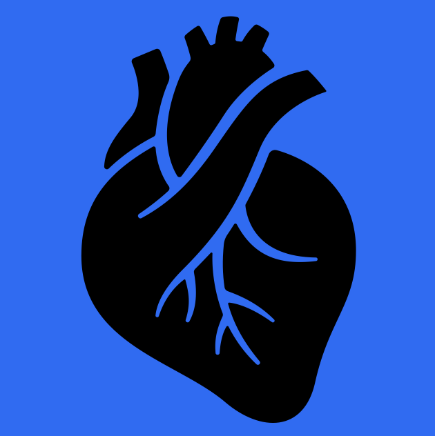

I exploit Neural Networks for approximating the solution of systems of ODEs and PDEs. I recently started studying DeepONets for various models, especially ionic models involved in the description of the cardiac cell physiology.

In this research area, I study preconditioners for large sparse linear systems derived from numerical discretization of PDEs involved in the description of the cardiac electrophysiology. Furthermore, I am part of the MICROCARD European research project funded by EuroHPC (link).
During my master thesis, I have explored quantum computing research areas, in particular the quantum version of the Cellular Automata. I have studied and implemented a model of interacting massless QCA, with its free dynamics recovering the Dirac Equation in the continuous limit. I occasionally collaborate also with my old colleagues and friends at the physics department of the University of Pavia.